Vejam como é grande o amor que o Pai nos concedeu: sermos chamados filhos de Deus, o que de fato somos! Por isso o mundo não nos conhece, porque não o conheceu. (1 João 3:1)
Galeria de Fotos
| Educação Infantil (1) |
| Educação Infantil » Humm, que delíciaaa! (5) |
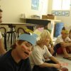 | Educação Infantil » Conversando sobre os índios (13) |
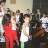 | Educação Infantil » Visita ao Museu das Bicicletas (4) |
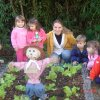 | Educação Infantil » Projetos (1) |
| Educação Infantil » Projetos » PROJETO MUSICALIZAÇÃO (7) |
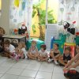 | Educação Infantil » Projetos » Projeto Educação Cristã (2) |
| Educação Infantil » Projetos » Projeto Éden Day (48) |
| Educação Infantil » Projetos » Projeto Orem Sempre (39) |
 | Educação Infantil » Projetos » PROJETO: EU, VOCÊ, NÓS... (10) |
| Educação Infantil » Projetos » A Família que Deus me deu (23) |
| Educação Infantil » Projetos » PLANETA TERRA: NOSSA CASA (10) |
| Educação Infantil » Noite do Soninho 2007 (84) |
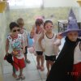 | Educação Infantil » Dia do Disfarce (11) |
| Notícias » Encerramento Geral 2008 (32) |
| Notícias » Encerramento Juarez Machado 2008 (19) |
| Notícias » Vereador Mirin 2008 (9) |
 | Notícias » Encerramento Ballet no Juarez Machado (55) |
| Notícias » Festa da Colheita 2008 (40) |
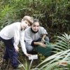 | Notícias » Semana Meio Ambiente na Oficina (29) |
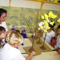 | Notícias » 5ª Feira Cultural (68) |
| Notícias » Ballet no Teatro Juarez Machado (16) |
| Notícias » Treinamento Professores no UNICENP (20) |
| Notícias » Visita do Prefeito (10) |
 | Notícias » Confraternização Família Oficina dos Sonhos (74) |
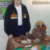 | Notícias » Feira de Ciências 2008 (19) |
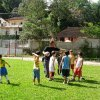 | Notícias » Torneio de Futebol (10) |
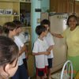 | Notícias » Visita no Lar Vicentina (4) |
| Notícias » Patati Patata na Oficina (30) |
 | Notícias » 16º Festival de Dança Interescolar (39) |
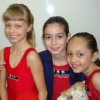 | Aulas Extras (1) |
 | Aulas Extras » Grupo Jazz 2007 (39) |
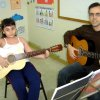 | Aulas Extras » Violão (7) |
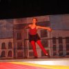 | Aulas Extras » Grupo Jazz 2008 (15) |
| Ensino Fundamental (1) |
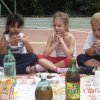 | Ensino Fundamental » Piquenique 1ªs séries na Sede de Campo (10) |
| Ensino Fundamental » Formatura Pré-escola 2008 (27) |
| Ensino Fundamental » Visitando o Memorial do Descobrimento (8) |
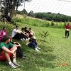 | Ensino Fundamental » Acampamento Campo Alegre (52) |
| Ensino Fundamental » Formatura 8ª Série 2008 (26) |
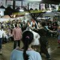 | Ensino Fundamental » Festa da Colheita (39) |
| Ensino Fundamental » Passeio 6ª e 7º ano Hotel Fazenda (19) |
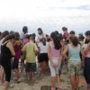 | Ensino Fundamental » Passeio São Francisco (33) |
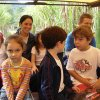 | Ensino Fundamental » Estrada Bonita (7) |
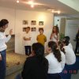 | Ensino Fundamental » Museu Sambaqui e Parque Caieras (13) |
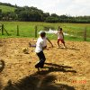 | Ensino Fundamental » Passeio 3ª Série Estrada Bonita (18) |


[+]